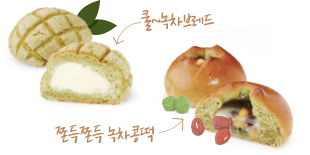
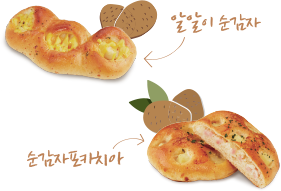
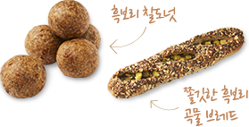
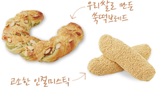
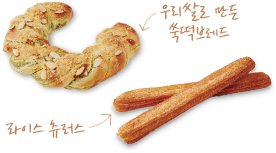
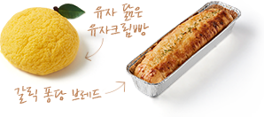

home > 브랜드 스토리 > 윤리경영
윤리경영
뚜레쥬르의 착한 빵 이야기
착한빵은 뚜레쥬르의 착한 마음을 담아 신선한 국내산 원재료를 사용하여 만든 빵으로
두 개가 팔릴 때마다 하나씩 복지시설 아동에게 맛있는 빵을 선물합니다.
-

- 2014년 착한 빵 하동녹차 빵
- 2014년에는 비영리단체(하동녹차연구소)가 운영하는 녹차농가(약2000가구)와의 직거래를 통하여 깨끗한 하동 녹차로 제품을 만들어 상생을 실천합니다.
- 바삭한 녹차 소보로빵에 시원한 크림을 넣은 쿨 브레드 제품으로 하동녹차를 이용하여 만든 뚜레쥬르 베스트 제품! 쿨~녹차브레드와 은은한 녹차를 넣은 담백한 빵에 쫀득한 찰떡과 달콤한 콩을 넣어 쫄깃하게 씹히는 녹차 쫀득쫀득 녹차콩떡
하동 녹차로 만든 뚜레쥬르 착한빵 2종
-

- 2015년 착한 빵 해남감자 빵
- 2015년에는 땅끝해남에서 감자를 재배하는 농가와의 거래를 통하여 신선한 해남산 감자로 제품을 만들어 상생을 실천합니다.
- 알알이 뜯어먹기 좋은 담백한 빵에 폭신한 순감자, 치즈와 허니머스타드 소스를 곁들인 알알이 순감자 (감자함량 31%)와, 담백한 포카치아 속 감자와 햄을 넣은 순감자 포카치아 (감자함량 42%)
해남산 감자로 만든 뚜레쥬르 착한빵 2종
-

- 2016년 착한 빵 흑보리 빵
- '우리땅에서 나는 건강 재료 발굴 상생 협약'을 통해 선정된 전라도 지역 특산물인 흑보리로 제품을 만들어 상생을 실천합니다.
- 담백한 흑보리와 쫄깃한 찹쌀이 어우러져 씹는맛이 좋은 한입사이즈의 흑보리 찰도넛과, 다양한 곡물과 고구마, 찹쌀떡이 어우러져 고소한 맛이 더욱 좋은 간식형 브레드
전라도 특산물 흑보리로 만든 뚜레쥬르 착한빵 2종
-

- 2017년 착한 빵 이천 쌀빵
- '우리땅에서 나는 건강 재료 발굴 상생 협약'을 통해 선정된 경기도 이천 지역의 국내산 쌀 제품으로 만들어 상생을 실천합니다.
- 향긋한 쑥과 쌀가루로 만든 쫄깃한 빵에 고소한 콩가루를 토핑한 고소한 인절미스틱과, 향긋한 쑥을 넣은 쫄깃한 떡을 쏙 넣고 소보로까지 토핑한 나눠먹기 좋은 우리쌀로 만든 쑥떡브레드
이천 쌀로 만든 뚜레쥬르 착한빵 2종
-

- 2017년 착한 빵 강원도 쌀빵
- '우리땅에서 나는 건강 재료 발굴 상생 협약'을 통해 선정된 강원도 지역의 국내산 쌀 제품으로 만들어 상생을 실천합니다.
- 향긋한 쑥을 넣은 쫄깃한 떡을 쏙 넣고 소보로까지 토핑한 나눠먹기 좋은 우리쌀로 만든 쑥떡브레드와, 쌀을 첨가하여 한층 더 쫄깃하고 바삭해진 츄러스에 달콤한 설탕을 토핑하여 커피와 잘 어울리는 라이스 츄러스
강원도 쌀로 만든 뚜레쥬르 착한빵 2종
-

- 2018년 착한 빵 고흥유자&의성마늘 빵
- 신선한 국내산 원재료인 고흥 유자와 의성 마늘로 제품을 만들어 상생을 실천합니다.
- 바삭한 비스켓을 올린 부드러운 브리오쉬에 고흥 유자로 만든 새콤한 유자청과 달콤한 크림을 가득 채운 유자 닮은 유자 크림빵과, 겉은 바삭 속은 부드러운 바게트에 달콤한 의성 마늘 소스를 듬뿍 뿌려 촉촉하고 깊은 맛의 갈릭 퐁당 브레드
고흥 유자와 의성 마늘로 만든 뚜레쥬르 착한빵 2종